选拔
12万人里的评委特别奖，把一个镰仓高中的学生送进堀制作。宿舍生活没有发生，演员生活发生了。
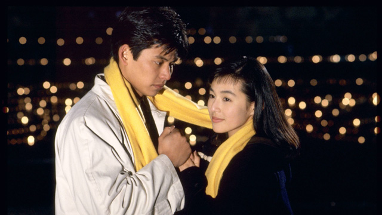
SUZUKI HONAMI
1966年8月14日生于东京都大田区的日本演员。1991年富士电视台星期一晚九点的《东京爱情故事》里，她把赤名莉香演成了一代人的脸：短发、丝巾，以及一声「カンチ！」。
先是 1991 年《东京爱情故事》里的赤名莉香，后面是后来的发布会和红毯。点图可以放大。部分剧照画面中央有图片网站加上的标志。
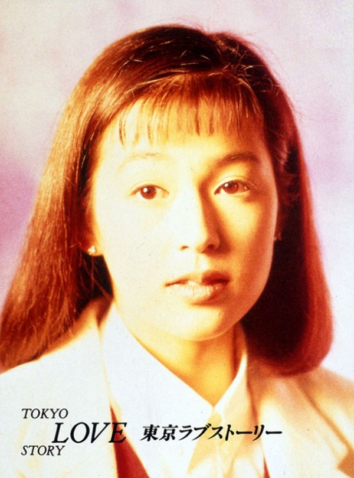
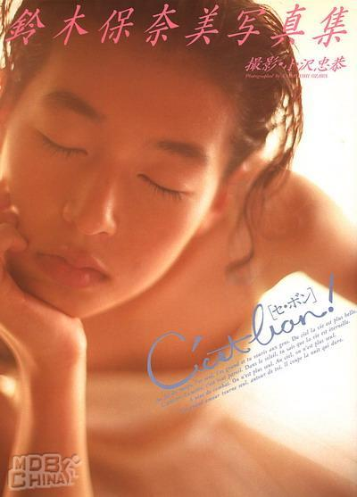
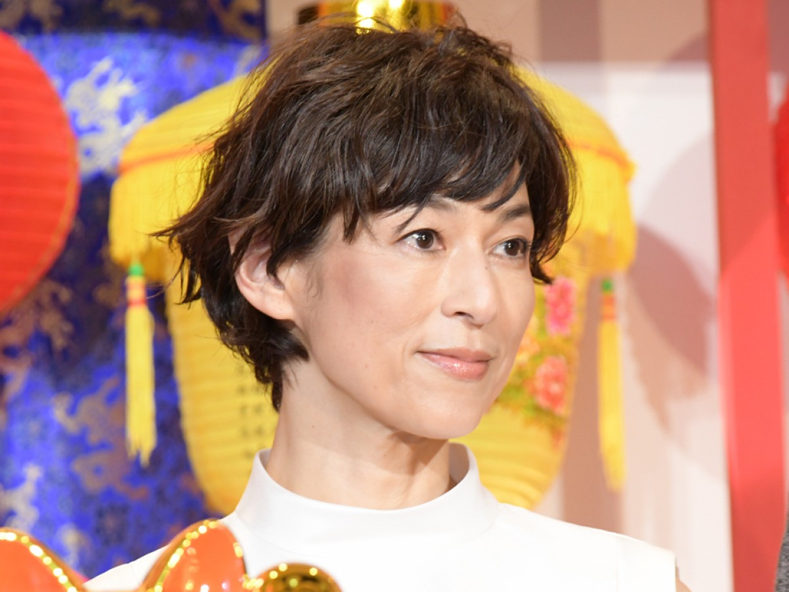

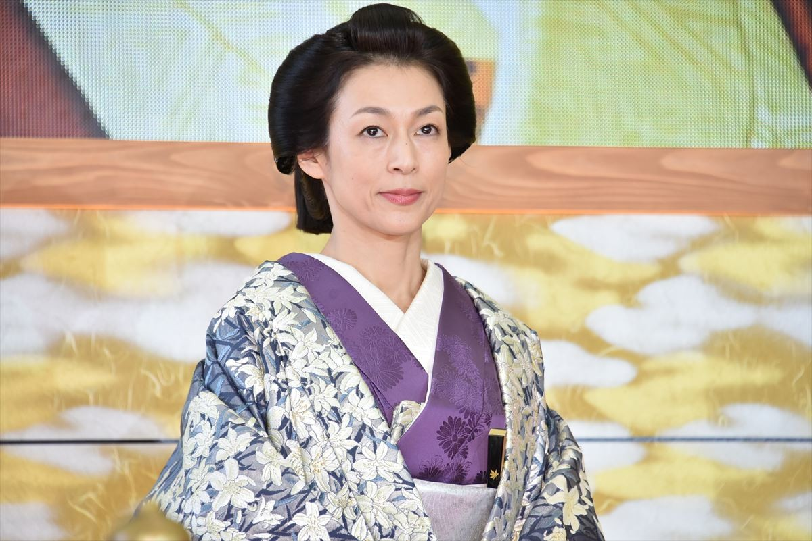
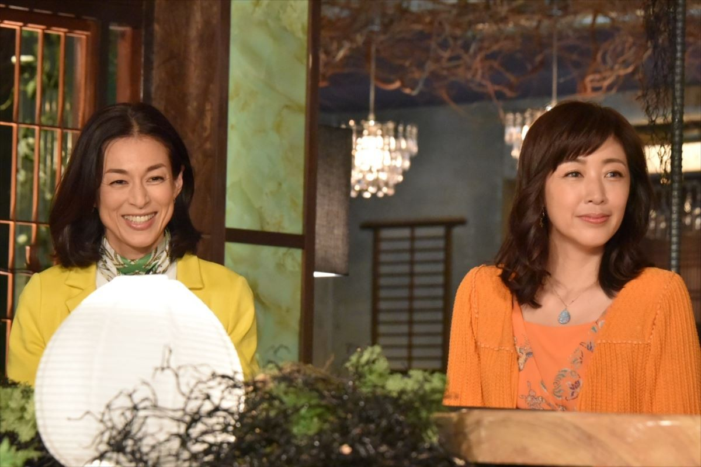
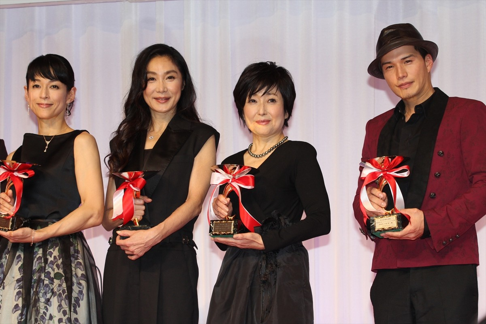
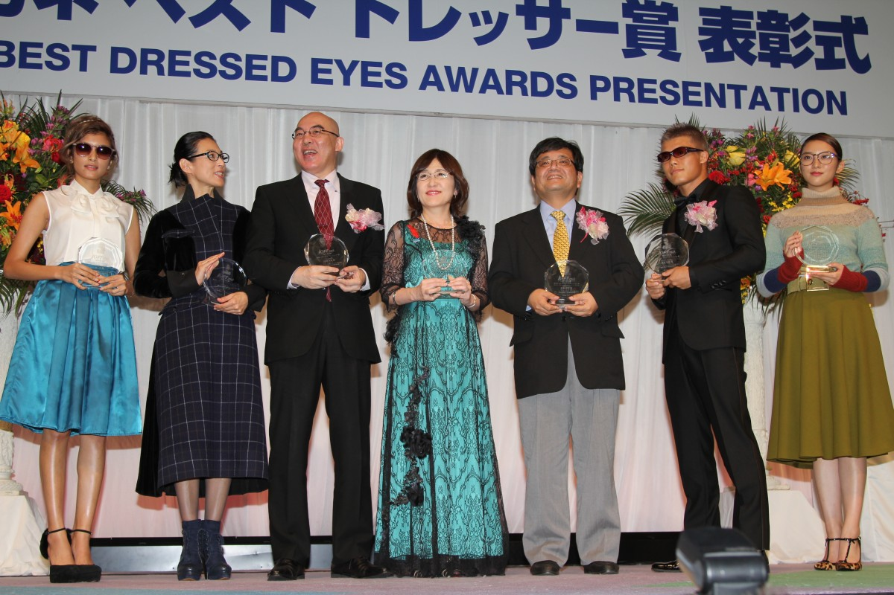
东京都大田区出生，神奈川县茅崎市长大。神奈川县立镰仓高等学校毕业后进入成城大学文艺学部，为演戏中途退学。1984年还在高中时，她报名第9届堀制作人才选拔，约12万报名者里拿到评委特别奖。她后来说，选这家事务所的理由之一，是听说合格者要过宿舍生活；结果她自己并没有住进宿舍。
1986年演员出道，拍过嘉娜宝化妆品的泳装广告，也进了当时正盛的潮流剧。1990年代她是富士黄金时段的常任女主角。1998年再婚并怀孕后退出台前，生下三个女儿。2008年女儿们上小学，她加入丈夫石桥贵明的事务所 Arrival，慢慢回到工作里。2011年在大河剧《江》里正式复出。
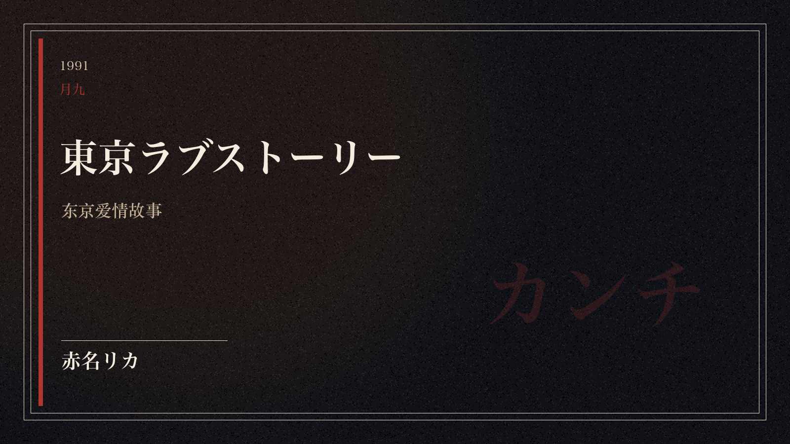
热到有一句现成的说法：星期一的夜里，街上的女人都不见了。莉香的短发、偏男性化的衣服和丝巾系法，被同一代女性照着学。她喊完治「カンチ！」，这句话进了流行语。潮流剧当时也在亚洲播出，中国和韩国有人向嘉娜宝询问，能不能拿到她做形象的海报。
莉香之后，富士黄金时段的女主角接连落到她身上。1992年《以爱为名》是藤木贵子，1994年《这个世界的尽头》是砂田麻里亚，1995年《恋人啊》是鸿野爱永，1998年《新闻女郎》是麻生环。日剧学院奖的主演女优赏，她拿过两次：1995年的《恋人啊》，1998年的《新闻女郎》。
贵子、麻里亚、爱永、环，各自有职业和脾气。观众把她们收成「铃木保奈美的月九」，靠的是同一个播出时段。
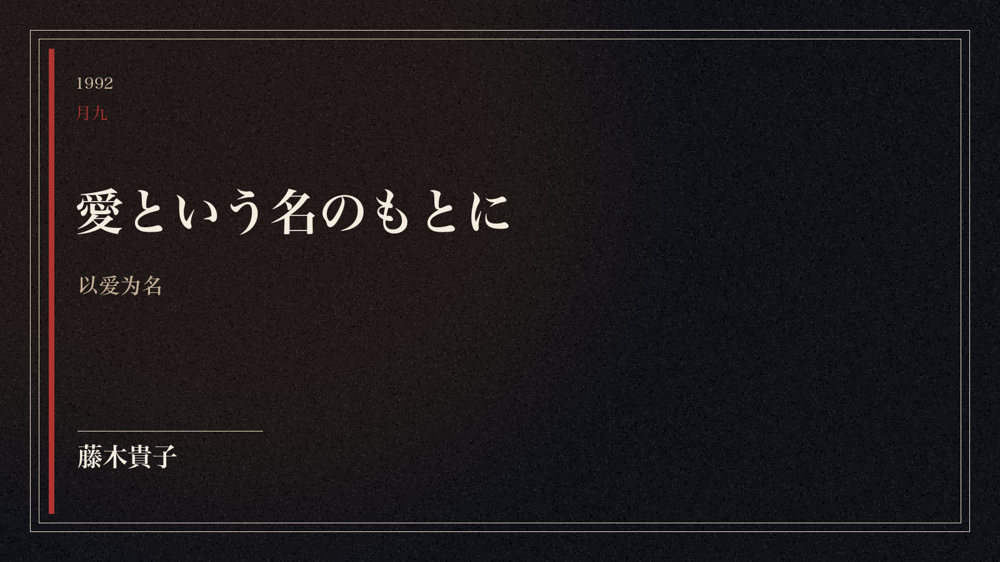
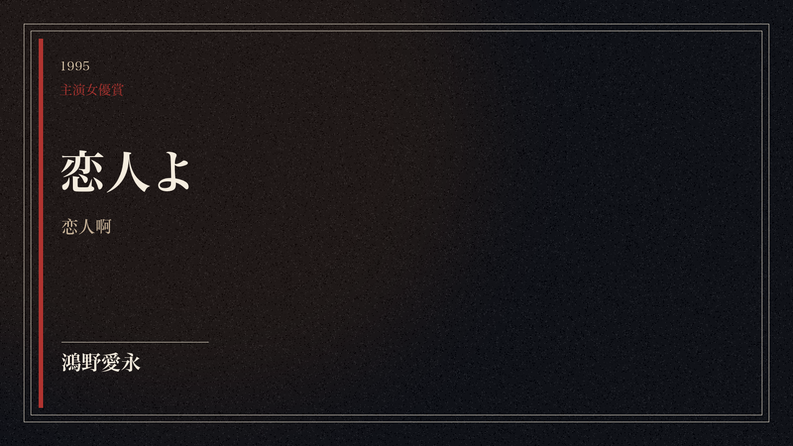
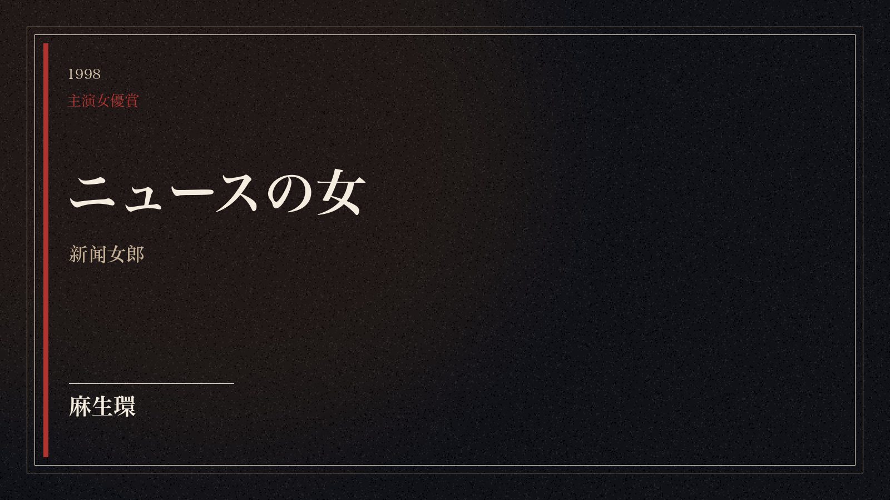
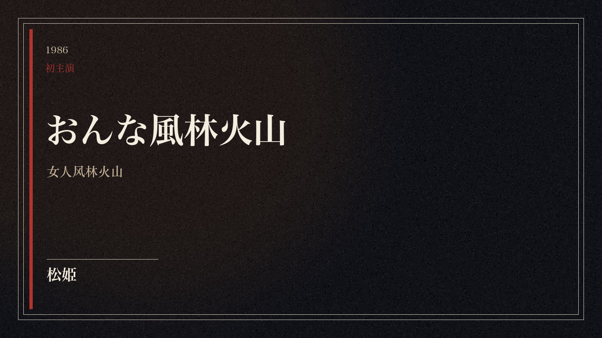
1999年大河剧《元禄缭乱》里她演染子。拍摄中查出怀孕，戏份比原计划少了很多，和所属的堀制作关系变坏，随后退出事务所。已经拍完的主演电影《いちげんさん》在2000年上映，那是她离开台前之前的最后一部。此后大约十年，她是三个女儿的母亲。
2011年的复出角色是战国的市，织田信长的妹妹，浅井长政的妻子，也是茶茶、初和江的母亲。她在这部大河剧里演戏，也做旁白。同一时期的电影《のぼうの城》饰珠，是时隔十一年再上银幕。2013年电影《白金数据》饰水上江利子。2016年《非妈妈白皮书》饰土井玲子，时隔十八年再担连续剧主演。2017年晨间剧《笑天家》里饰藤冈静。2018年到2020年，日版《SUITS》两季，她是律师事务所的幸村千佳。
接受《朝日新闻》采访时，她问过报纸还要把带写真的周刊广告登到什么时候，并说自己在意一件事：那些版面明明是把女性当成商品。别的公开嗜好更日常：她是 Barbie Boys 的歌迷，1992年1月24日乐队解散演出和《以爱为名》的拍摄撞在一起，她向剧组要了大约三十分钟，听了两三首歌再回片场。她也看横滨 DeNA，喜欢核桃面包，做过「核桃面包年度奖」的评委；近年少吃麸质，面包吃得少了。
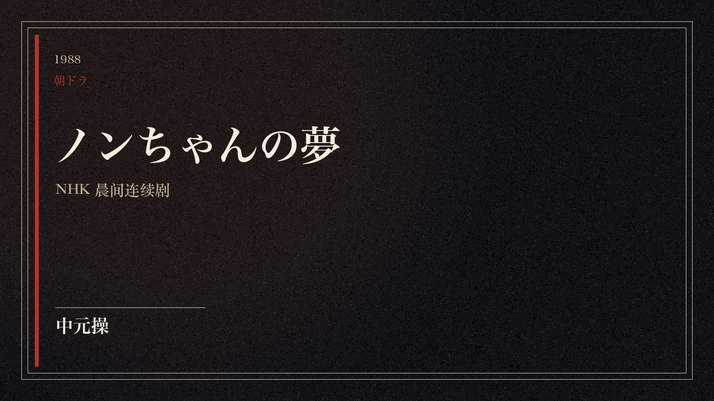
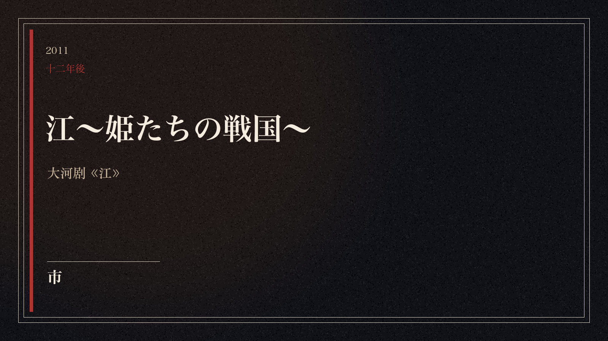
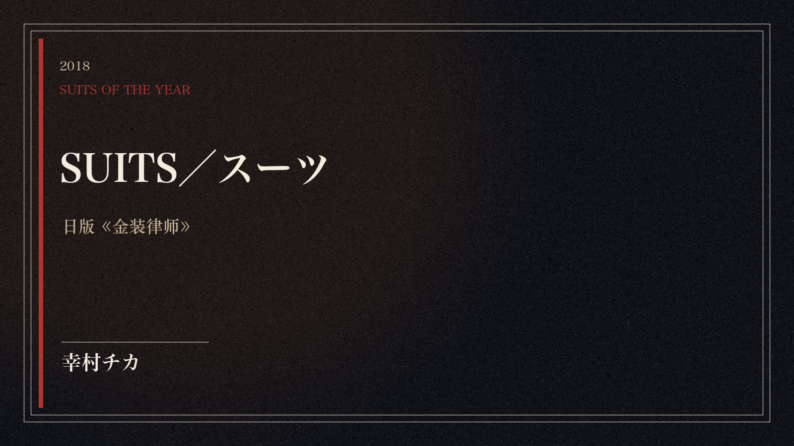
角色卡仍是这一页自制的片名，用来记住剧名和角色。上面「照片」一节才是她本人。
事务所：堀制作，1984年至1999年；Arrival，2008年至今。奖项里还可以记下第25届日本珠宝最佳着装奖四十代部门。近年连续剧包括《35岁的少女》《家庭教师虎子》《人事的人见》《私人银行家》。
12万人里的评委特别奖，把一个镰仓高中的学生送进堀制作。宿舍生活没有发生，演员生活发生了。
1991年的月九把她从「有名的年轻演员」变成一种穿着和说话方式。カンチ是那一季的口令。
1992、1994、1995、1998，富士黄金档女主角。两次学院奖都落在这几年。
息影十年后再回来，她演母亲、历史人物和律师事务所的合伙人。莉香仍是入口之一。